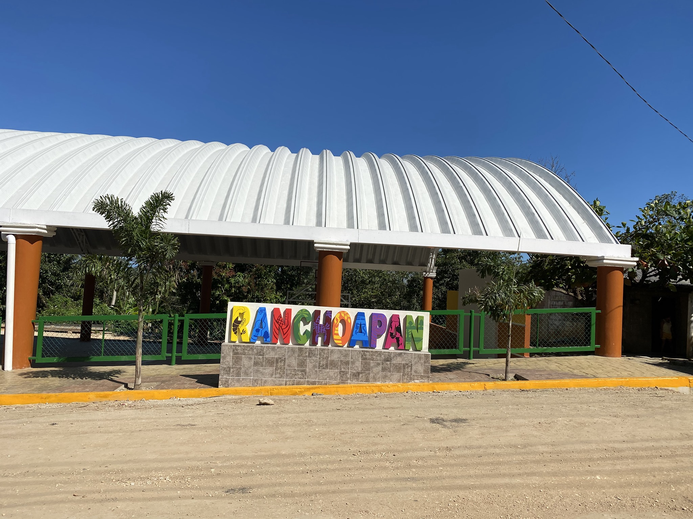
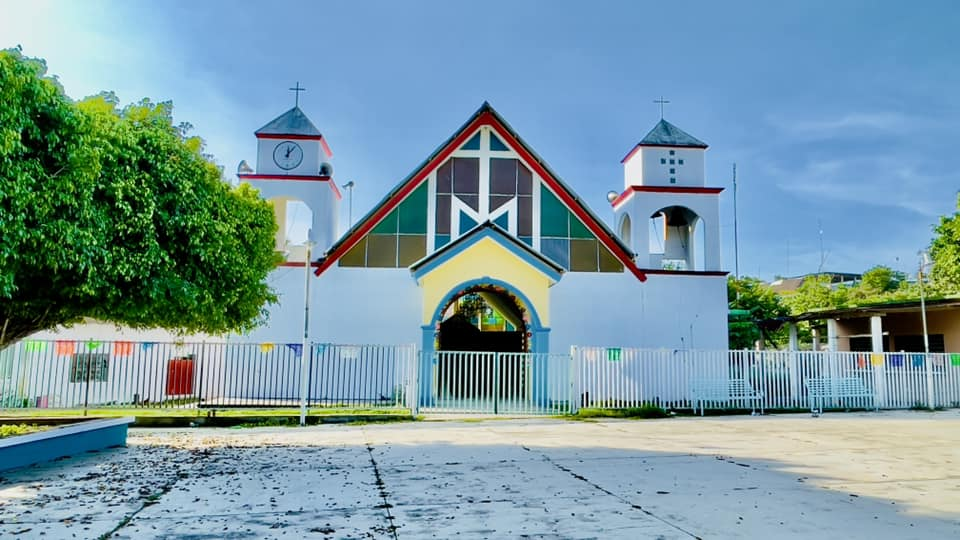
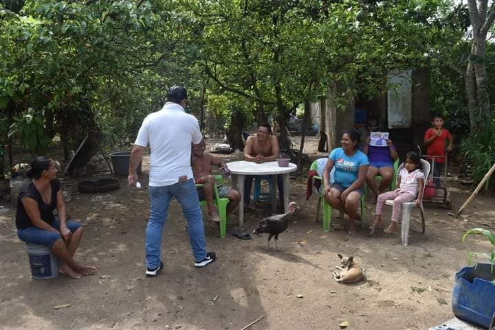
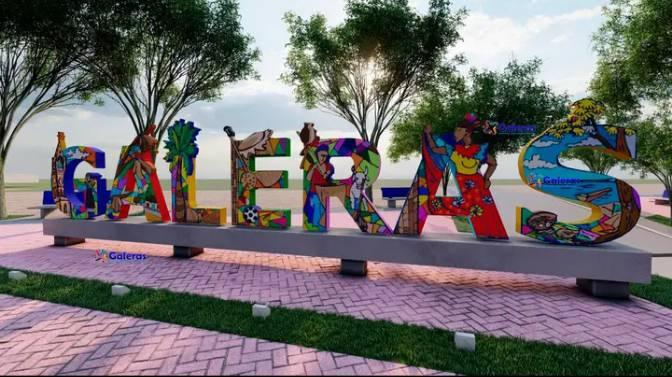
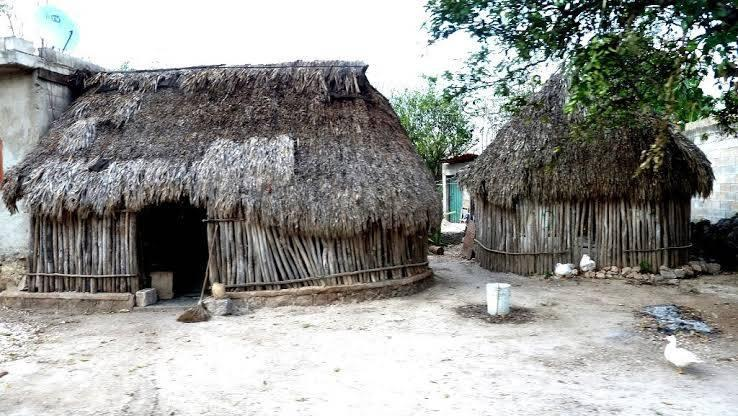
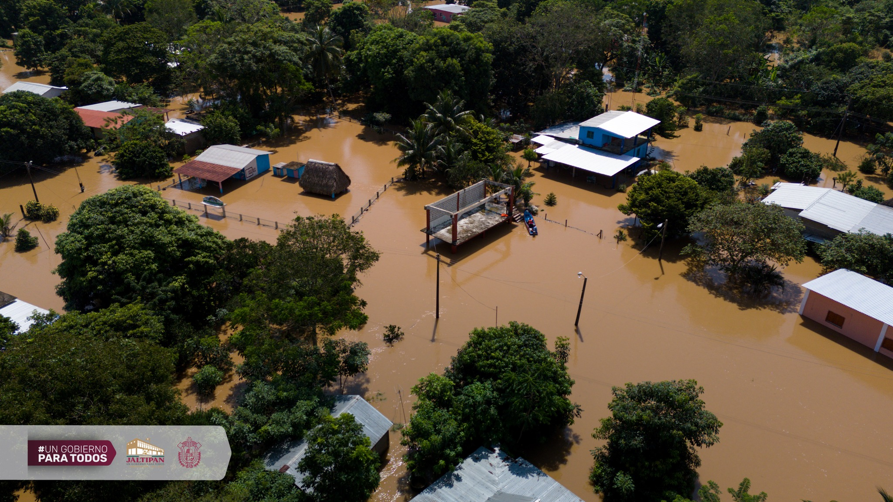
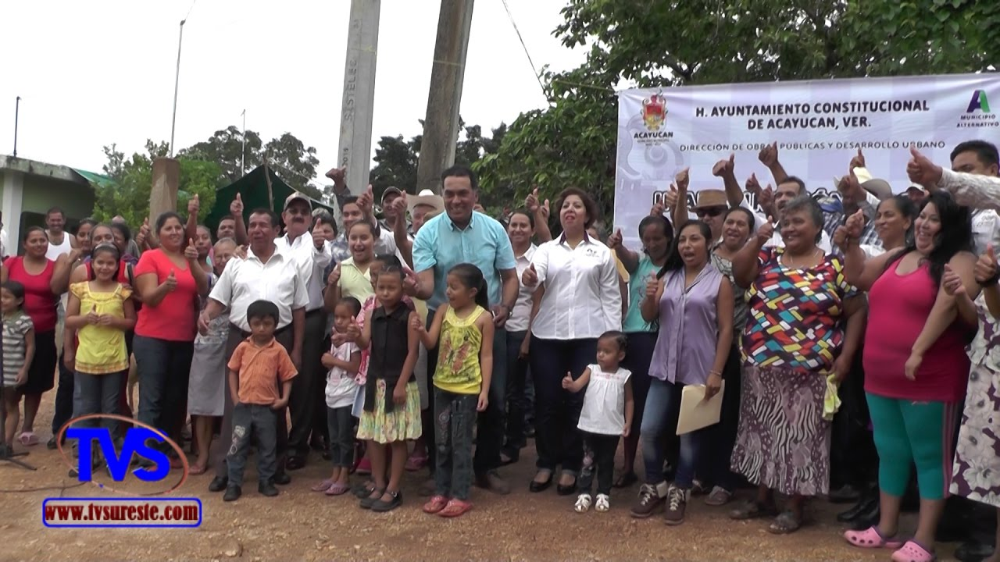

Localidades cercanas

Ranchoapan
- Habitantes: 450
- Familias: 113
- Escuelas: Kinder: 1, Primaria: 1, Secundaria: 0, Bachillerato: 0, Universidades: 0
- Distancia a Jáltipan: 4 km
Ranchoapan

Mixtán
- Habitantes: 320
- Familias: 80
- Escuelas: Kinder: 1, Primaria: 1, Secundaria: 0, Bachillerato: 0, Universidades: 0
- Distancia a Jáltipan: 6 km
Mixtán

San Soles
- Habitantes: 172
- Familias: 43
- Escuelas: Kinder: 1, Primaria: 1, Secundaria: 0, Bachillerato: 0, Universidades: 0
- Distancia a Jáltipan: 9 km
San Soles

Lomas de Tacamichapan
- Habitantes: 380
- Familias: 95
- Escuelas: Kinder: 1, Primaria: 1, Secundaria: 1, Bachillerato: 0, Universidades: 1
- Distancia a Jáltipan: 15 km
Lomas de Tacamichapan

Galeras
- Habitantes: 300
- Familias: 75
- Escuelas: Kinder: 1, Primaria: 1, Secundaria: 0, Bachillerato: 0, Universidades: 0
- Distancia a Jáltipan: 7 km
Galeras

La Lajilla
- Habitantes: 210
- Familias: 53
- Escuelas: Kinder: 1, Primaria: 1, Secundaria: 0, Bachillerato: 0, Universidades: 0
- Distancia a Jáltipan: 11 km
La Lajilla

Ixpuchapan
- Habitantes: 160
- Familias: 40
- Escuelas: Kinder: 1, Primaria: 1, Secundaria: 0, Bachillerato: 0, Universidades: 0
- Distancia a Jáltipan: 12 km
Ixpuchapan

Yancuigapan
- Habitantes: 290
- Familias: 73
- Escuelas: Kinder: 1, Primaria: 1, Secundaria: 0, Bachillerato: 0, Universidades: 0
- Distancia a Jáltipan: 10 km
Yancuigapan

Buena Vista
- Habitantes: 230
- Familias: 58
- Escuelas: Kinder: 1, Primaria: 1, Secundaria: 0, Bachillerato: 0, Universidades: 0
- Distancia a Jáltipan: 8 km
Buena Vista

Malota
- Habitantes: 275
- Familias: 69
- Escuelas: Kinder: 1, Primaria: 1, Secundaria: 0, Bachillerato: 0, Universidades: 0
- Distancia a Jáltipan: 13 km